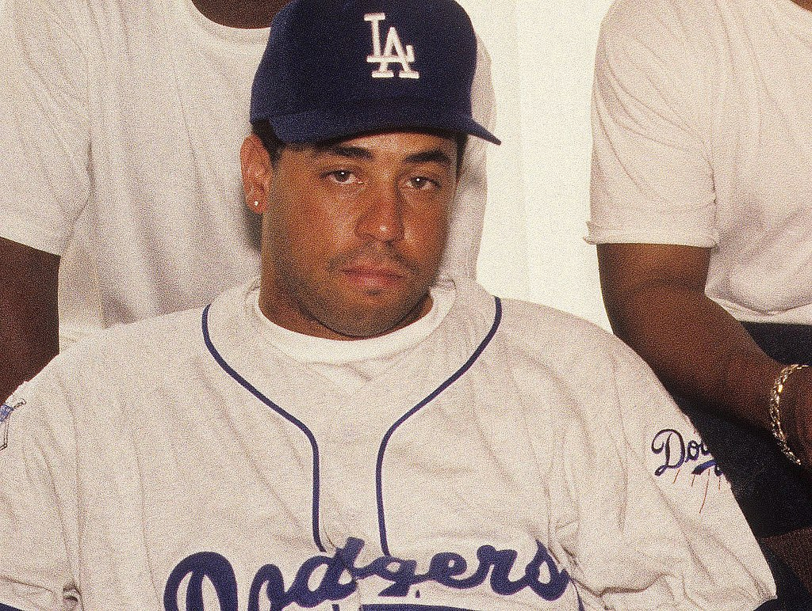
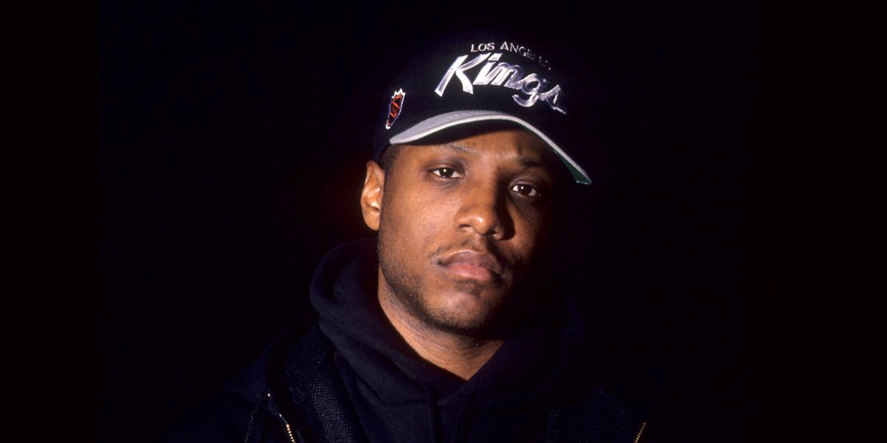

N.W.A.
N.W.A.
N.W.A. in full means Niggaz Wit Attitudes, an american Hiphop gangstar-rap group from Compton,Los Angelles. It was formed in 1987 by its five members; Dr. Dre, Eazy E, Ice Cube ,Dj Yella and MC Ren. The co-founder was the late Eazy E who was a highschool-dropout and a alleged drug dealer.From the money he got from selling drugs, he made a record label known as Ruthless Records. together with Jerry Heller, who later came to backstab them. Its members were among the earliest and most significant popularizers and controversial figures of the gangstar rap . They were also considered one of the most influential groups in the history of Hiphop Music. I really like N.W.A. because of they helped redifine the genre, by influencing Black raps that were intelligent, socially and political aware. They also protesed against evils of the society such as racism, gang-violence and corruption,especially among the governament.
ALBUMS

Straight Outta Compton
Straight Outta Compon is a debut-studio album, led by Eazy E, was released by his record Ruthless Records.
The album was produced by N.W.A members Dr. Dj. Yella and Arabian Prince, with lyrics written by Ice Cube.
Not merely depicting street violence, the lyrics repeatedly threaten to lead it by attacking peers and even the police.
It received it's first platinum certififcation, one million sold copies and by then, peaked at #9 on Top Billboard R&B HipHop Albums
Download Here

Niggaz 4 life
Niggaz 4 life was the second but unfortunately, the last album by the rap group. It was released on May 28, 1991.
This was the same year when the rap group disbanded afetr the departure of Dr. Dre to form Death Row Records
Niggaz 4 life debut at number #2 on Top R&B Hiphop Albums and also won the Grammys on March 21, 1992.
As this was their last album, they later added songs to the original album , contributing to a total of 12 Eps.
Download here
Music Band Members
DR. Dre

Dre , Andre Romelle Young,(born February 18,1965) is an american song-writer, audio-engineer, record producer and businessman
. In 1985, he found fame in NWA , rap group of which wasn't his first band as he was earlier in a group called World Class Wreckin Crew. He owns the record label,
Aftermath, Beats Electronics and Death Row Records.
Ice Cube

O Shea Jackson Jr., professionally known as Ice Cube, is an American singer/rapper, actor and filmmaker.
His lyrics to gangstar rap group NWA contributed widly to their fame .
When the group disbanded, he become a solo-singer and also made some amazing and popular music ,such as Amerikka's Most Wanted
Eazy E

Eric Lynn Wright(born September 7,1964) known professionally as Eazy-E was an american rapper, producer and businessman.
He is the one who proppelled West Coast gangstar rap group N.W.A.
In 1995, Eazy-E was daignosed with AIDS and died later that year due to its complications.
Dj Yella

Antoine Carraby (born December 11,1967) known as DJ Yella, was an american rapper , producer and film director.
Yella was passionate to music from a young age. He grew up listening to a funk music and learned to play drums .
He was a member of World Class Wreckin Crew with DR. Dre then both entered the group ,N.W.A.
MC Ren

Mc ren, Lorenzo Jerald Patterson , is an american rapper, songwriter and record producer from Compton, L.A.
He is the founder of Villain entertainment. MC Ren started as a solo artist , before joining N.W.A. After the rap group disbanded , he stayed signed with Ruthless before again leaving the label i 1998.
My Favoutite Songs By N.W.A. :
- Straight Outta Compton Listen Here
- Express Yourself Listen Here
- World's Most Dangerous Group LIsten Here
- Appetite for destruction Listen Here
- 100 Miles and Runnin Listen Here